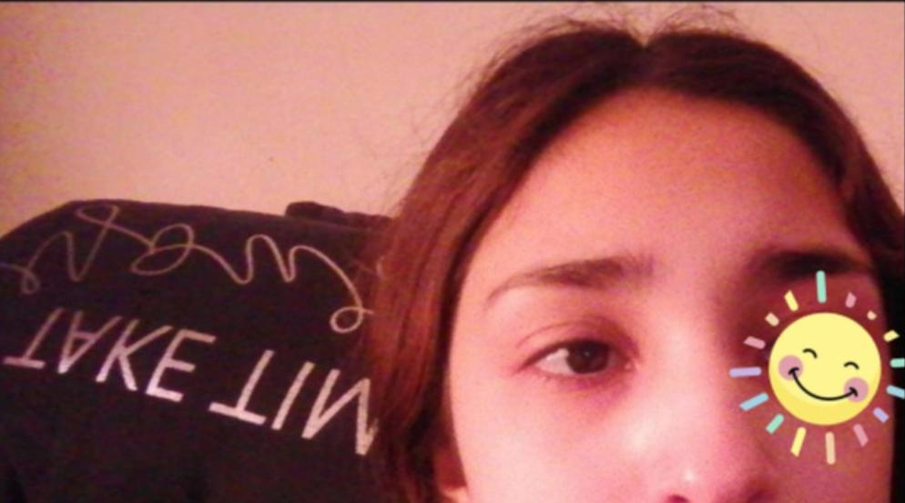

Esta tilina es muy mecha corta por que te dice vulgaridades sin motivo alguno pero, siendo asi tiene muchas green flags cuales son:
1.- Es muy amable, solo cuando tiene ganas
2.- Tiene una foto con MissaSinfonia Increible
3.- Es muy inteligente y se esfuerza mucho pero mucho estudiando
4.- Su estilo de ropa es chipiris nice <3
5.- Le gusta mucho el jugo de manzana jumex pero el amor de su vida es la fresa limón
6.- La calle de las sirenas le da vibes de felicidad osea <3
Pero aun siendo asi de perfecta tiene defectos osea red flags para la gente de barrancos, los cuales son:
¿Qué? esperabas que ella iba a tener, obvio no papurri ella es la perfection pero cedric es el mejor mago de howards, aceptalo ya porfa.

Obvio esta niña tiene apodos, y son unos cuantos:
1.- Majo
2.- Majonsini
3.- Majurris bella
4.- Maje
5.- Majullis
7.- Corriente
Esta mushasha tiene unas bellas mascotas y son un amor, wacheatealas <333